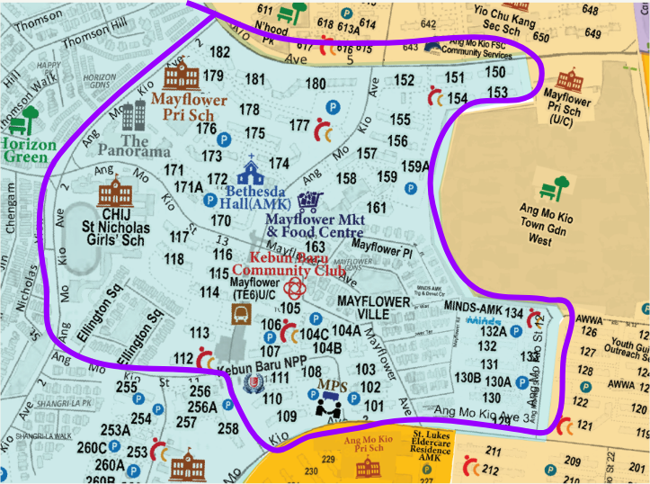
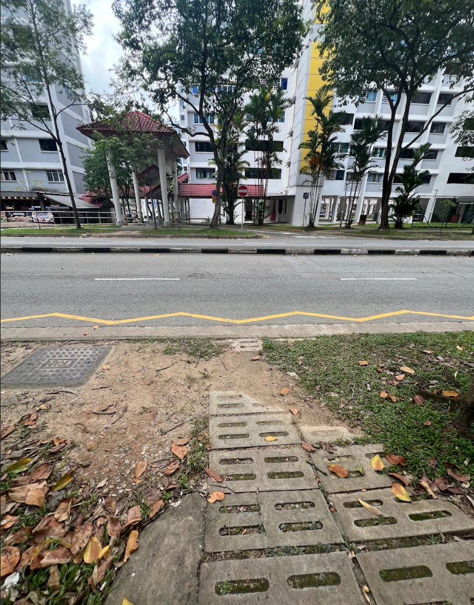
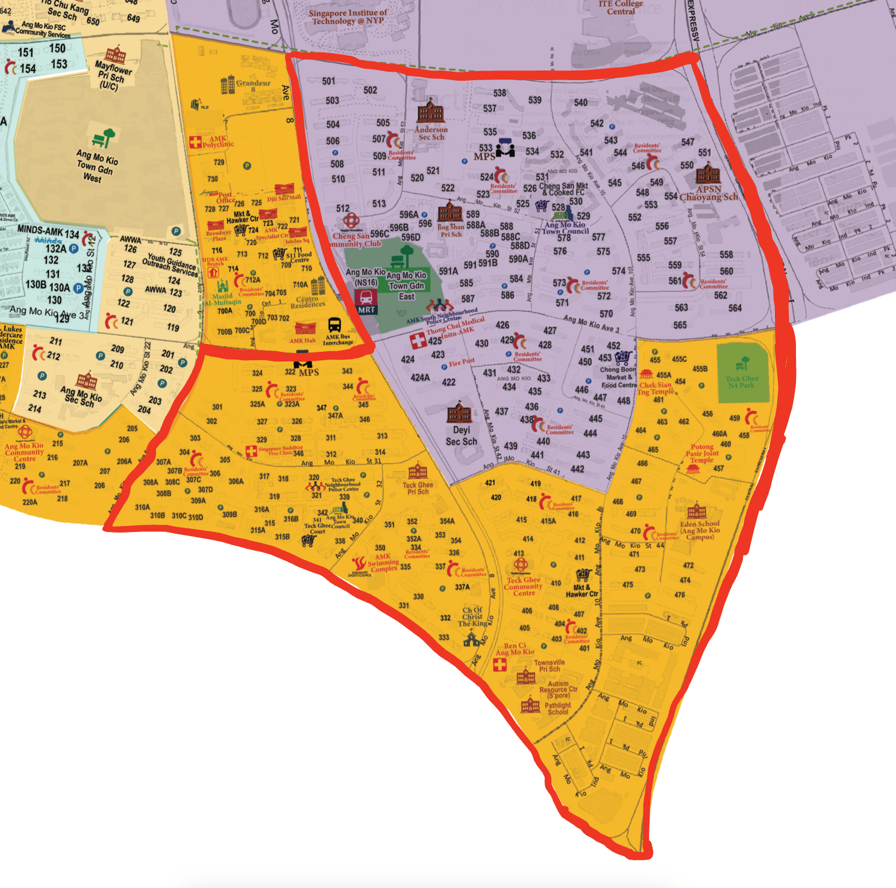
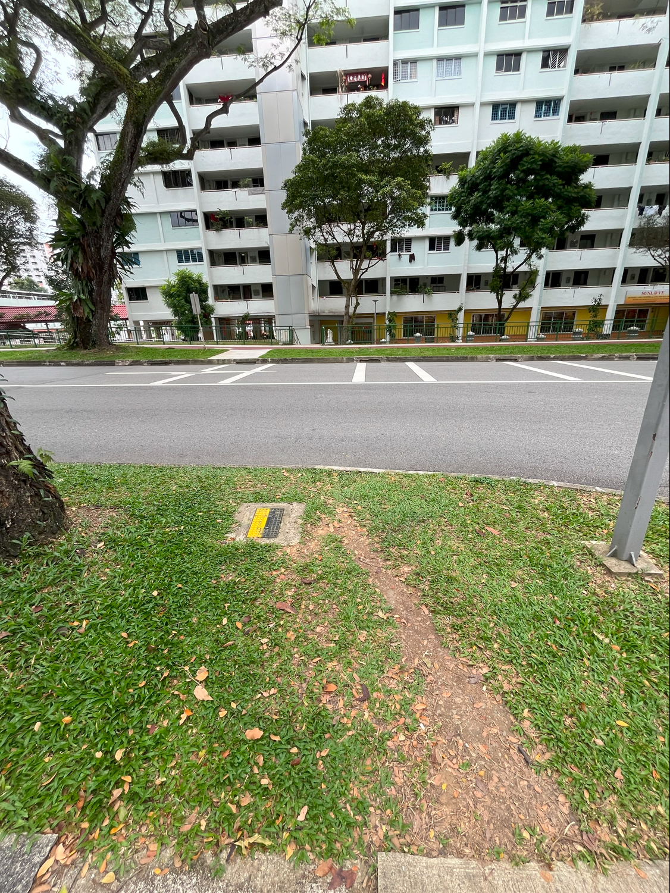
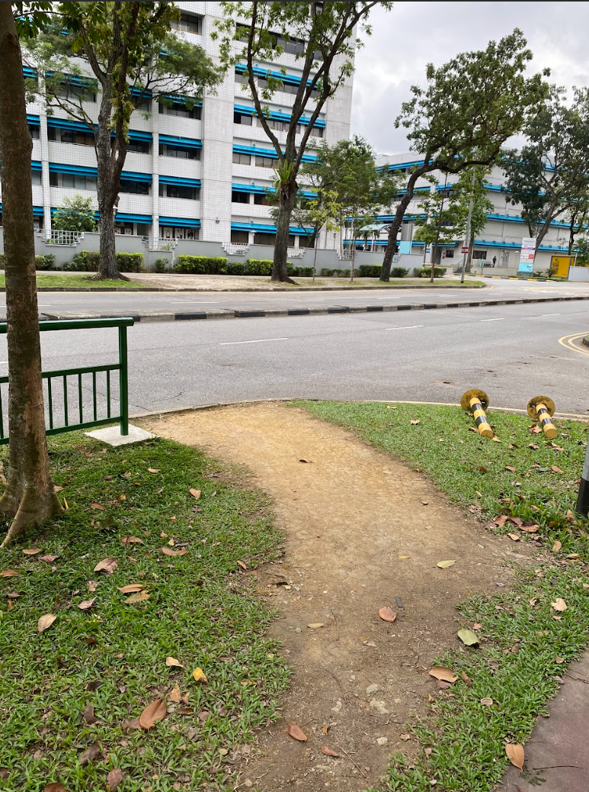
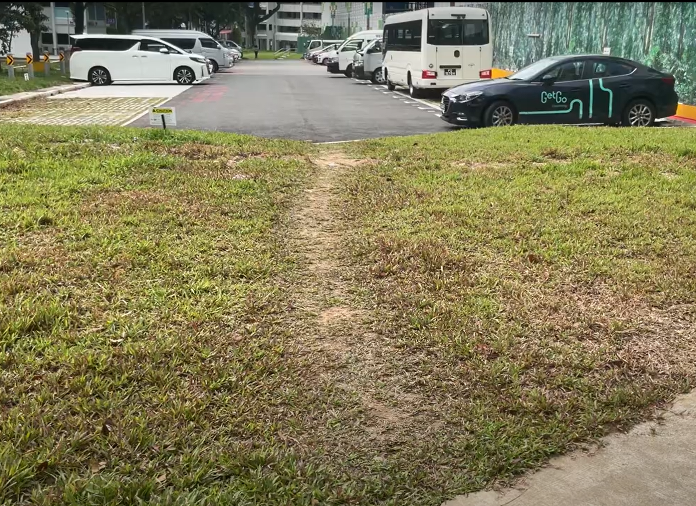
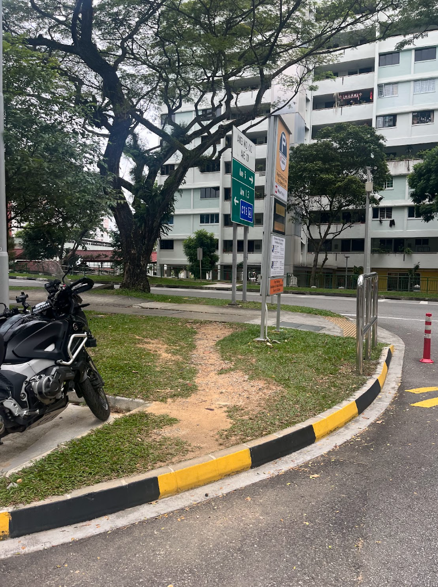

On-the-ground Research: Ang Mo Kio
1st On-the-ground Research: Kebun Baru
Conducted on: 29/1/2024
Members: James, Karina, Shanelle
Total No. of desired lines found: 7
Kebun Baru

Locational Characteristic: |
Key Amenities: |
|
|
Desire Lines
Examples:
| Discription | Photos |
|---|---|
| Commonly found nearby road crossing |  |
2nd On-the-ground Research: AMK Hub
Conducted on: 21/2/2024
Members: James, Karina, Shanelle, Yao Quan, Alvin
Total No. of desired lines found: ??

Locational Characteristic: |
Key Amenities: |
|
|
Desire Lines
Examples:
| Discription | Photos |
|---|---|
| Commonly found near road crossing |   |
| Commonly found near carparks |   |
Interview with Residents:
| Demographics | Overall Walking Experience: | Views on existing walking paths: |
|---|---|---|
|
75-80 years old woman |
Pleasant |
|
Observations:
Before going to AMK, our group assumed that there would be quite a lot of desired paths within the neighborhood as AMK has quite of history. Indeed, it is surprisingly found that there are not much desired paths around the area from our 2 on-the-ground research.
In terms of walkability:
Desired paths are commonly found nearby existing traffic light crossroad
Assumption: Long waiting time for traffic lights reduce the patience of residents to cross safely
Jaywalking are common within the neighborhood
Assumption: The current designed paths are not the most direct path → residents tend to find a shortcut by themselves
In terms of amenities:
Eateries/ Clinics are usually located below the the HDB blocks
Reachable in walking distances within 5-10 minutes
Low variety of amenities within the neighborhood: lack of parks/ recreational facilities